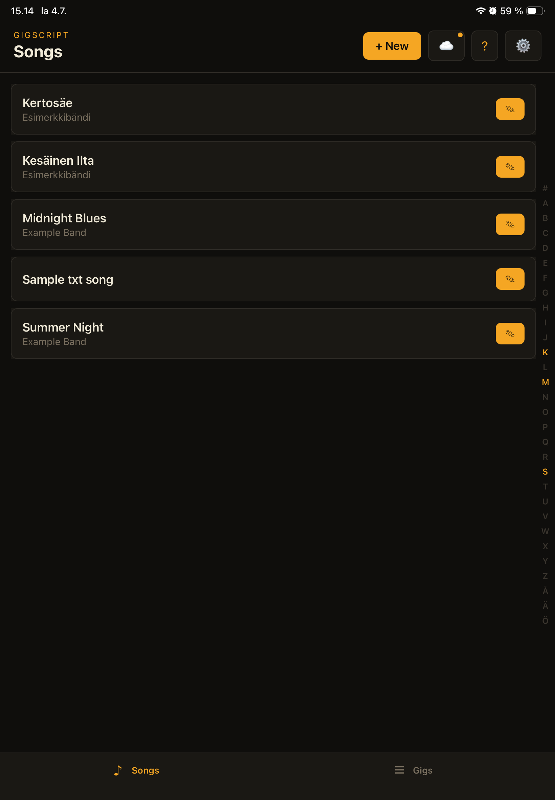
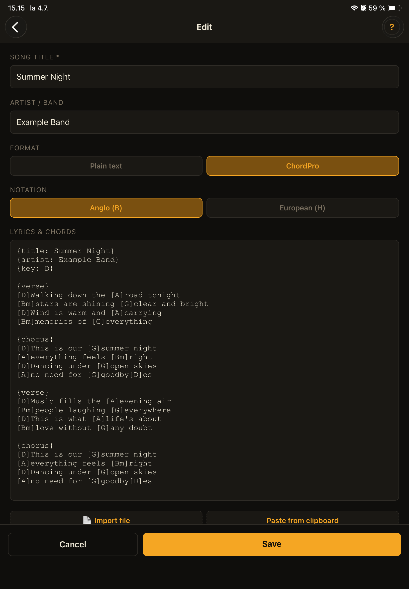
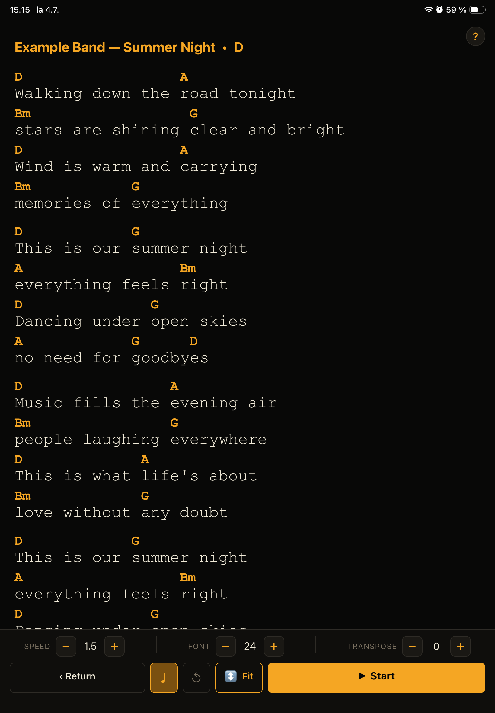
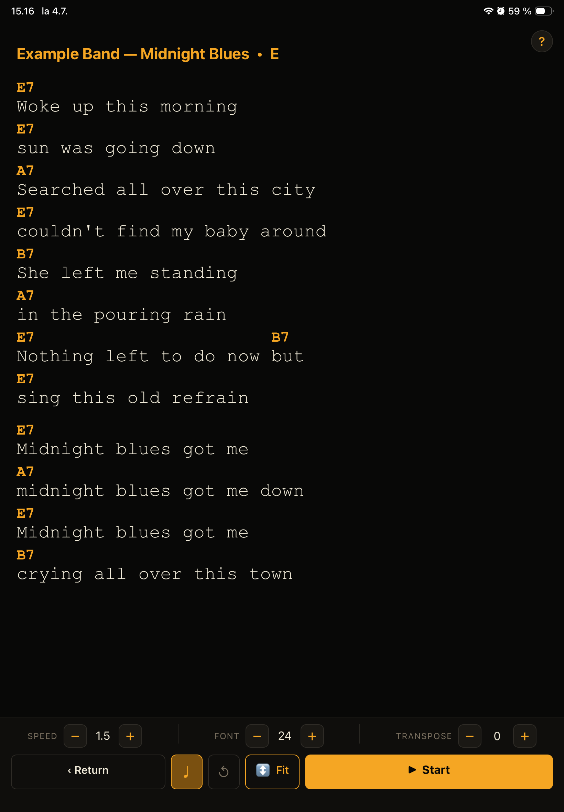
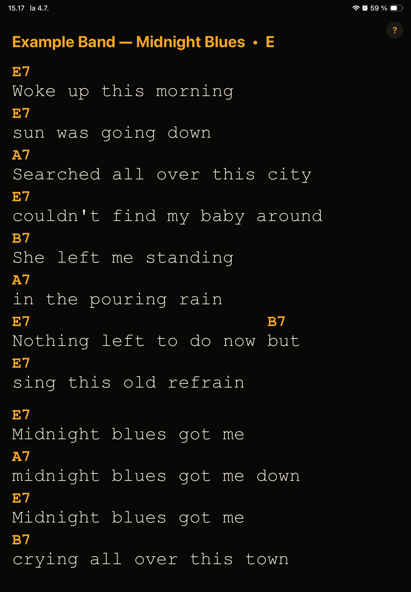
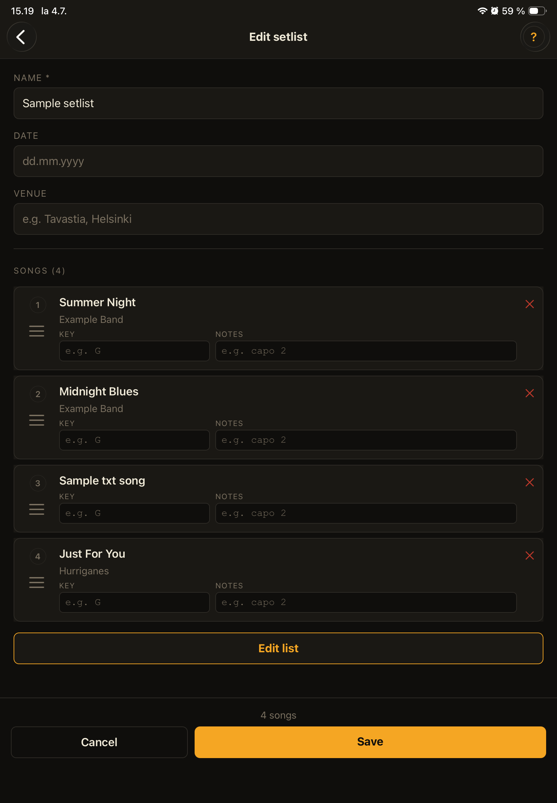
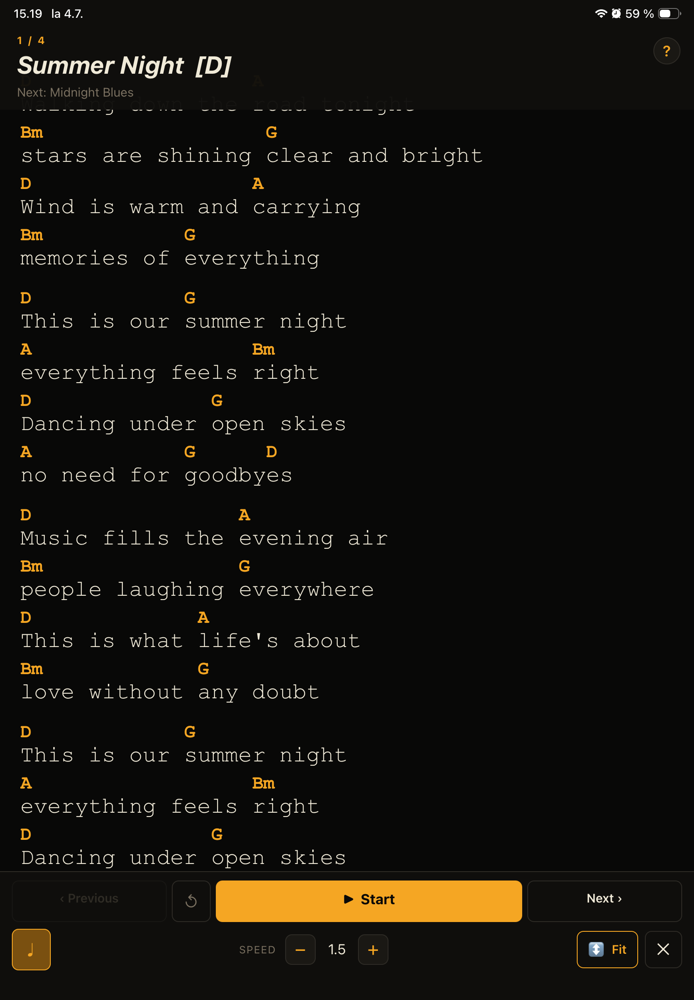

Song libraryKappaleet
Adding and managing songsKappaleiden lisääminen ja hallinta
Your song library is the heart of GigScript. Songs are sorted alphabetically with a letter index on the right for quick navigation. Kappalekirjasto on GigScriptin ydin. Kappaleet on järjestetty aakkosjärjestykseen ja oikeassa reunassa on kirjainindeksi nopeaa navigointia varten.

Add a new songLisää uusi kappale
Tap + New in the top right. Enter the song title, artist name, and lyrics. Choose between plain text or ChordPro format. Napauta + Uusi oikeassa yläkulmassa. Syötä kappaleen nimi, artisti ja sanat. Valitse vapaa teksti tai ChordPro-muoto.
Import from a fileTuo tiedostosta
In the song editor, tap Import file to open a file picker. GigScript supports .chordpro, .cho, .crd, .txt, and .pdf files.
Kappalemuokkaimessa napauta Tuo tiedosto avataksesi tiedostonvalitsimen. GigScript tukee .chordpro, .cho, .crd, .txt ja .pdf tiedostoja.
Paste from clipboardLiitä leikepöydältä
Tap Paste from clipboard to import text you've copied from another app. GigScript automatically detects ChordPro format. Napauta Liitä leikepöydältä tuodaksesi tekstin jonka olet kopioinut toisesta sovelluksesta. GigScript tunnistaa ChordPro-muodon automaattisesti.
Edit a songMuokkaa kappaletta
Tap the ✎ pencil button on any song card to open the editor. Napauta ✎-kynäpainiketta missä tahansa kappalekortissa avataksesi muokkaimen.
Delete a songPoista kappale
Swipe left on the song card (iOS) or long-press (Android) to reveal the delete option. Deleting a song removes it from all setlists automatically. Pyyhkäise kappalekortilla vasemmalle (iOS) tai paina pitkään (Android) nähdäksesi poistopainikkeen. Kappaleen poistaminen poistaa sen automaattisesti kaikista settilistoista.
Copy a songKopioi kappale
Tap the copy button on a song card to create a duplicate. The copy is automatically marked local — it won't sync to other band members. Useful for adding personal notes or annotations to a shared song. Napauta kopiointinappia kappalekortissa luodaksesi kopion. Kopio merkitään automaattisesti paikalliseksi — se ei synkronoidu muille bändin jäsenille. Hyödyllinen omien merkintöjen lisäämiseen jaettuun kappaleeseen.
ChordPro
Using ChordPro formatChordPro-muodon käyttö
ChordPro is a text format used for chord sheets and lyrics. GigScript displays chords in amber above the lyrics, perfectly aligned. ChordPro on tekstimuoto kappaleille jossa on soinnut. GigScript näyttää soinnut oranssinkeltaisina sanojen yläpuolella, täydellisesti kohdistettuna.


Basic syntaxPerussyntaksi
Chords in square bracketsSoinnut hakasulkeissa
Place chords directly within the lyric line where the chord changes occur: [Am]Words go [G]here. GigScript lifts the chords above the text automatically.
Sijoita soinnut suoraan sanojen sekaan kohtaan jossa ne soitetaan: [Am]Sanat [G]menevät tähän. GigScript nostaa soinnut automaattisesti tekstin yläpuolelle.
Directives for metadataDirektiivit metatiedoille
Use curly-brace directives at the top of the song: Käytä aaltosulkeisiin merkittyjä direktiivejä kappaleen alussa:
{title: Song Name}
{artist: Artist Name}
{key: Am}
{verse} / {chorus} / {bridge}
Transpose on the flyTransponoi lennossa
In the teleprompter, use the TRANSPOSE − and + buttons to shift all chords up or down by semitones. The range is −6 to +6. Both Anglo (B) and European (H) notations are supported. Teleprompterissa käytä TRANSPONOI − ja + painikkeita siirtääksesi kaikkia sointuja ylös tai alas puolisävelaskelein. Alue on −6:sta +6:een. Sekä Anglo (B) että eurooppalainen (H) notaatio on tuettu.
Hide chordsPiilota soinnut
Tap the ♩ chord button in the teleprompter to hide chords and show only lyrics — useful for vocalists who don't need chord notation. Napauta ♩-sointupainiketta teleprompterissa piilottaaksesi soinnut ja näyttääksesi vain sanat — hyödyllinen laulajille jotka eivät tarvitse sointunotaatiota.
.chordpro, .cho, .crd) directly — GigScript parses them automatically. Many chord sheet websites offer ChordPro downloads.
Voit tuoda olemassa olevia ChordPro-tiedostoja (.chordpro, .cho, .crd) suoraan — GigScript parsii ne automaattisesti. Monet sointulappu- ja sanoitussivustot tarjoavat ChordPro-latauksia.
TeleprompterTeleprompteri
Using the teleprompterTeleprompterin käyttö
Open any song from the list to launch the teleprompter. Tap the screen to show or hide the controls. Avaa mikä tahansa kappale listasta käynnistääksesi teleprompterin. Napauta ruutua näyttääksesi tai piilottaaksesi painikkeet.

- Speed — adjust scroll speed with − and + while the song is playing. Nopeus — säädä vieritysnopeus − ja + napeilla kappaleen soidessa.
- Font size — make text larger or smaller to suit your reading distance. Fontti — suurenna tai pienennä tekstiä sopimaan lukuetäisyydelle.
- Play / Pause — start or pause automatic scrolling. Käynnistä / keskeytä — aloita tai keskeytä automaattinen vieritys.
- Reset ↺ — jump back to the top of the song at any time. Nollaa ↺ — hyppää kappaleen alkuun milloin tahansa.
- Fit to screen ⊡ — auto-scale font so the whole song fits without scrolling. See below. Sovita näytölle ⊡ — skaalaa fontti automaattisesti niin, että koko kappale mahtuu ilman vieritystä. Katso alla.
- Screen stays on — GigScript keeps the display lit during a session so it never goes dark on stage. Näyttö pysyy päällä — GigScript pitää näytön päällä session aikana jotta se ei sammu lavalla.
Fit to screenSovita näytölle
Fit the whole song on screenKoko kappale yhdelle näytölle
For short songs — a chorus, a bridge, a riff — fit mode scales the font so the entire song is visible at once. No scrolling needed. Lyhyille kappaleille — kertosäe, silta, riffi — sovitustila skaalaa fontin niin että koko kappale on näkyvissä kerralla. Ei vieritystä tarvita.

Activate fit modeAktivoi sovita näytölle -tila
Tap ⊡ Fit in the controls bar. GigScript measures the content and finds the largest font size that fits the screen. Napauta ⊡ Sovita kontrollirivissä. GigScript mittaa sisällön ja löytää suurimman fonttikoon joka mahtuu näytölle.
Controls hide automaticallyPainikkeet piilotetaan automaattisesti
In fit mode, scroll controls are hidden to maximise reading area. Tap the screen once to reveal them. Sovita näytölle -tilassa vierityksen painikkeet piilotetaan lukunäytön maksimoimiseksi. Napauta ruutua kerran nähdäksesi ne.
Exit fit modePoistu sovita näytölle -tilasta
Tap the screen to show controls, then tap ↕ Scroll to return to scroll mode. Napauta ruutua näyttääksesi kontrollit, sitten napauta ↕ Skrollaus palataksesi vieritystilaan.
SetlistsSettilistat
Building and running setlistsSettilistojen rakentaminen ja ajaminen
Build setlists for your gigs, run them on stage with swipe navigation, and keep key reminders and notes per song. Rakenna settilistat keikoillesi, aja niitä lavalla pyyhkäisynavigoinnilla ja pidä sävellaji- ja keikkahuomiot per kappale.

Create a setlistLuo settilista
Go to the Gigs tab and tap + New setlist. Give it a name, optional date and venue. Mene Keikat-välilehdelle ja napauta + Uusi settilista. Anna sille nimi, valinnainen päivämäärä ja keikkapaikka.
Add songsLisää kappaleita
Tap Edit list to open the song picker. Your full library is shown with an alphabet index — tap a song to add it to the setlist. Each song can only appear once. Napauta Muokkaa listaa avataksesi kappaleiden valintanäytön. Koko kirjasto näytetään aakkosindeksillä — napauta kappaletta lisätäksesi sen settilistaan. Sama kappale voi olla listalla vain kerran.
Reorder songsJärjestä kappaleet
Drag the ☰ handle to reorder songs in the setlist. Order is saved automatically. Vedä ☰-kahvaa järjestääksesi kappaleet settilistalla. Järjestys tallentuu automaattisesti.
Set key and notes per songAseta sävellaji ja huomiot per kappale
On the setlist view, each song has a key field (e.g. G or capo 2) and a notes field. These appear on the cue card during performance.
Settilistaänäkymässä jokaisella kappaleella on sävellaji-kenttä (esim. G tai capo 2) ja huomio-kenttä. Nämä näkyvät kuiskauskortilla esiintymisen aikana.
Run the setlist on stageAja settilista lavalla
Tap ▶ to launch performance mode. Swipe left to advance to the next song, swipe right to go back. At the end, GigScript shows a "Gig over!" message. Napauta ▶ käynnistääksesi esiintymistilan. Pyyhkäise vasemmalle siirtyäksesi seuraavaan kappaleeseen, oikealle mennäksesi takaisin. Lopussa GigScript näyttää "Keikka ohi!" -viestin.

Using PDF sheet musicPDF-nuottien käyttö
Import any PDF — sheet music, chord charts, lyrics — and scroll through it with the teleprompter's auto-scroll. Tuo mikä tahansa PDF — nuotit, sointutaulukot, sanat — ja vieritä sen läpi teleprompterin automaattisella vierityksellä.
Import a PDFTuo PDF
In the song editor, tap Import file and select a PDF from your device. The PDF is attached to the song and stored locally. Kappalemuokkaimessa napauta Tuo tiedosto ja valitse PDF laitteeltasi. PDF liitetään kappaleeseen ja tallennetaan paikallisesti.
Use the teleprompter with PDFKäytä teleprompteri PDF:n kanssa
Open the song as usual. GigScript shows the PDF with the same speed and font-size controls. Use auto-scroll to move through multi-page PDFs. Avaa kappale normaalisti. GigScript näyttää PDF:n samoilla nopeus- ja fonttikokokontrolleilla. Käytä automaattista vieritystä usean sivun PDF:ien läpi liikkumiseen.
Sync PDFs with your bandSynkronoi PDF:t bändin kanssa
When you sync with band sync, PDF files are automatically uploaded to a pdfs/ subfolder in the shared cloud folder. Other band members download the PDF automatically on their next sync.
Kun synkronoit bändisynkalla, PDF-tiedostot ladataan automaattisesti pdfs/-alikansioon jaetussa pilvipalvelukansiossa. Muut bändin jäsenet lataavat PDF:n automaattisesti seuraavassa synkkauksessaan.
Band syncBändisynkronointi
Sharing songs with your bandKappaleiden jakaminen bändin kanssa
GigScript Pro includes band sync — share your entire song library with the band via a shared folder on Dropbox or Google Drive. GigScript Pro sisältää bändisynkkan — jaa koko kappalekirjastosi bändin kanssa jaetun kansion kautta Dropboxissa tai Google Drivessa.
- Works cross-platform — iOS and Android in the same band Toimii cross-platform — iOS ja Android samassa bändissä
- Both songs and setlists sync — PDF files too Sekä kappaleet että settilistat synkronoituvat — myös PDF-tiedostot
- Only real changes are transferred — unchanged songs and setlists are skipped Vain todelliset muutokset siirretään — muuttumattomat kappaleet ja settilistat ohitetaan
- Conflict detection — if two people edit the same song or setlist, you choose which version to keep Ristiriitojen havainnointi — jos kaksi henkilöä muokkaa samaa kappaletta tai settilistaa, valitset kumpi versio säilytetään
- Songs marked "local" are never synced — personal annotations stay on your device Kappaleet jotka on merkitty "paikallinen" eivät synkronoidu — omat merkinnät pysyvät laitteellasi
- Sync is always manual — nothing unexpected happens on stage Synkka on aina manuaalinen — lavalla ei tapahdu mitään odottamatonta